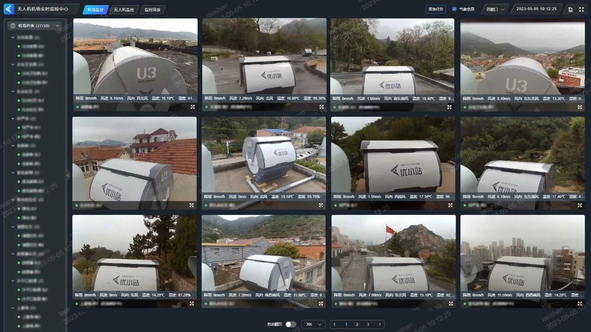
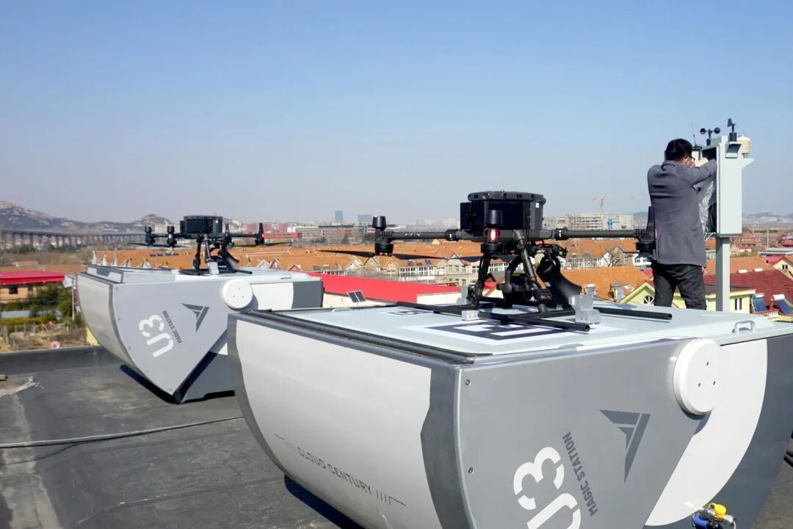
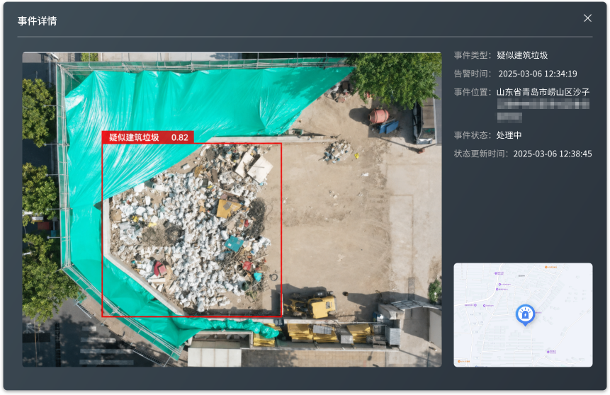
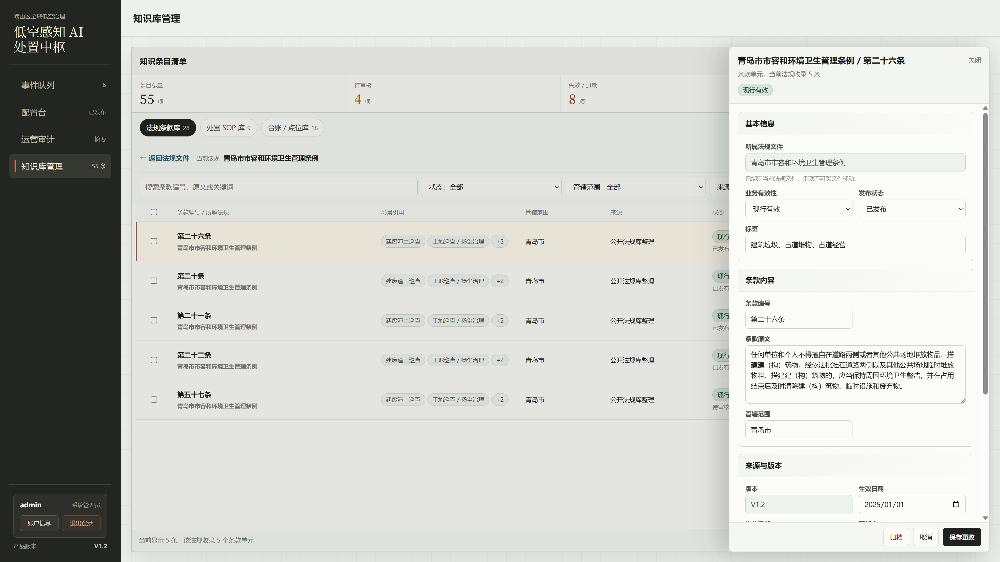
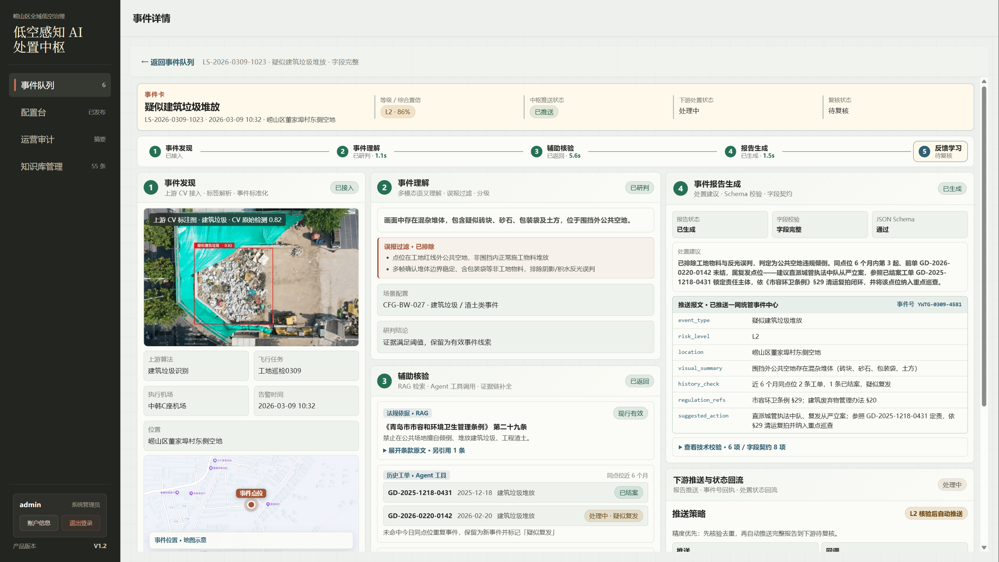

第一层 · 事件发现层
接入 CV · 解析算法标签 · 快速初分路由
标准化事件输入
我在感知平台与政务处置之间增加 AI 分析，把 CV 告警加工成可复核的事件报告。
云世纪承建的平台已投入运行，覆盖机场调度、航线、飞行作业、影像采集和 CV 识别，为 AI 分析层提供数据基础。

全域实时画面
云世纪 U3 自动机场2023 年方案就提了自动 AI 分析报警，当年只做到基础 CV 识别：检测到“有”，判不了“违不违规”。

疑似建筑垃圾 · 置信度 0.82城市治理里同一视觉特征、合规与违规并存。纯 CV 只做目标检测，做不了合规判断，误报率天然高：
飞行、采集、处置消费都在原业务系统完成。AI 处置层只接收 CV 告警，推送待复核报告，不越过业务系统。
提交飞行申请，配置算法类型，形成飞行需求。
机场调度、航线规划、影像采集和 CV 识别，输出两类 CV 告警。
接收 CV 告警，完成语义理解、辅助核验和事件报告生成，推送下游待复核。
复核、派发、执法、结案，并把确认、忽略、修改结果回流为反馈。
在感知和处置之间补一层 AI 分析：不接管处置，只把告警加工成可复核报告。
事件发现后，编排层统一调度理解、检索和查询；结果再汇总生成，失败即转人工。
综合多模态、RAG 台账快照、历史查询结果，按场景模板生成报文和建议。
每一步用不同的模型和参数，因为每一步要解决的精度、延迟和成本问题不一样。
确定性动作不交给 LLM；路由错了，后面全错。
低光照下同一张图问三次答案可能不一样，温度高了加剧不稳定。
先找语义近邻，再用关键词约束法规术语、点位名和台账字段。
汇总生成直接产出推给下游的字段，不能有随机性。
单条约 ¥0.01–0.03，成本主要压在多模态那一步。
事件发现层先拦掉明显误报，比更换便宜模型更能降低单条成本：省掉一次多模态调用，单条成本就能降一半。先做减法，再谈选型。
按 N 关闭备注。
RAG 查询法规，并获取当下有效的点位、红线、白名单和活动备案。生命周期短、更新不在本系统控制内的数据，必须查最新版本。

一条建筑垃圾告警的 RAG 查询：法规召回优先，动态台账查最新；精准判断留到汇总生成时由编排层用完整上下文完成。
多模态还在并行跑；场景配置展开关键词，并用「崂山区」过滤辖区，只查建废场景挂载的数据源。
召回优先，K 值设大，返回 8 条候选法规条款，同时拉取当前工地红线和点位台账快照。
编排层拿到多模态、RAG、历史查询和台账快照后，逐条筛掉主体不匹配、已废止、上下文不适用或点位状态不命中的结果。
引用带原文片段、法规名称、条款编号和适用性标注。
01 · 构造查询：编排层下发 RAG 检索时，多模态还在并行跑，不需要等视觉结果。「建筑垃圾识别」标签已路由到建废场景，场景配置展开检索关键词：建筑垃圾、违规倾倒、渣土堆放、公共场地、围挡外堆体。加位置「崂山区」过滤管辖范围。检索范围限定建废场景已挂载的条款子集，同时指定工地红线、点位台账、备案白名单取当前快照。
02 · 混合检索：向量检索 + 关键词 BM25 交叉验证。召回优先，K 值放大，宁可多给候选，也别漏掉可能适用的条款。最终返回 8 条候选法规条款，同时拉取当前工地红线和点位台账快照。汇总生成负责精准判断。
03 · 汇总时交叉验证：编排层拿到三路结果后做交叉验证：多模态说「围挡外公共空地混杂堆体」，RAG 捞回 8 条，Agent 返回 2 条历史记录和当前台账状态。LLM 逐条筛：讲弃置场管理的条款和当前事件主体不匹配，排除；讲处置单位义务的条款同理，排除；点位如果命中当前工地红线，则不按违规倾倒直接推送。最终引用市容条例 §29（公共场地堆放）和建废管理办法 §20（违规倾倒）。筛掉的 6 条里，有 1 条是已废止条款，入库时漏标了 valid_until。
04 · 最终输出：引用带原文片段、法规名称、条款编号、适用性标注，也记录台账来源、版本和更新时间。标注逻辑：「围挡外 + 混杂堆体 + 不在当前工地红线内」→ 适用上述两条。条款元数据结构见 P07 知识库管理界面。
底部决策条：RAG 先保召回。报告是否可用，关键看最新台账 / 点位状态是否可查；编排层在汇总生成时结合完整上下文完成精准判断。
按 N 关闭备注。
选场景 = 价值 × 可判定性。优先接入视觉证据充分、上下文可补、数据可得、责任清晰的场景。
L1 宁可误报不可漏报，烟火积水只做过滤和路由，不生成处置建议。L2 宁可漏判不可扰民，完整生成报告，依托台账/法规/SOP 做合规判断。
一条告警走完完整链路。同一套引擎，换风险等级就换策略。判不准时，兜底接住。
每个推送字段的来源都可追溯。评测时能直接定位是哪一层的问题。
看图判断框选区域内有什么、周边环境是什么
“围挡外空地存在混杂堆体，含砖块、混凝土碎块及少量编织袋。综合判断符合建筑垃圾特征。”
引用适用的法规条款及裁量基准
“市容条例 §29（公共场地堆放）· 建废管理办法 §20（违规倾倒）”
查询工地红线，判断是否位于在建工程用地范围内
“在建工地红线：未命中。该点位不在任何在建工程用地范围内。”
查询同点位历史事件，判断是否复发
“近 6 个月同点位 2 条：03-09 建筑垃圾/已处置 · 01-14 渣土/已处置。当前为第 3 次同类事件。”
根据视觉判断、法规引用、台账状态和历史记录，综合生成处置建议
“限期清运（3 个工作日）· 复拍确认 · 复核销号。复发点位建议从严重处。”
被问"还有别的场景吗"时口头讲：识别到占道 ≠ 认定违规。CV 输入「疑似占道经营 0.88」，高架桥下便民服务区。
系统 Trace：① 理解场景，区分占道 / 店外经营 / 临时停留 → ② 查地点白名单，命中「高架桥下便民早餐点」备案 → ③ 核对允许时段（06:00–09:00，巡检 08:15，时段内）→ ④ 生成巡查记录留档，不派单。
落点：备案摊点留档但不派单；核验条件不完整时，系统转人工复核。与工地物料案例同一逻辑：查台账 / 白名单后做降级，不直接执法。
按 N 关闭备注。

同一套编排引擎，会随风险等级切换温度、调用链路和产出内容。
同一套多模态理解，不同风险等级下判断口径相反。
L2 需要补上下文；L1 要快，跳过会拖慢和越界的环节。
这里会从完整报告切到应急预警。
系统要说明自己什么时候不确定，并把这类告警交回人工。受控编排的重点，是每个控制点都有兜底动作。
标「待复拍确认」，不进入编排。
标 L3 低置信进复核池，不自动推送。
停推理，保留已有结果，标「信息不完整」转人工。
拦截不推送，回退重试或转人工。
驳回入库；同类驳回累积到阈值，触发规则或知识库排查。
AI PM 的活，是把不稳定的判断链做成能评测、能上线的系统。
L1 和 L2 的允许误差方向相反：L1 宁可误报不能漏报，L2 宁可漏判不能扰民。所以评测目标、评测集和红线要分开。
47 条火情/烟雾事件，漏一个即停推。
手工建集，覆盖炊烟、扬尘、雾气、已知焚烧点、低光照、小目标 6 类边界。端到端全链路跑，只看这一个数。
多模态测复判准确率，RAG 测引用相关率，Schema 自动校验。
8 类场景各抽 12–15 条构成图像评测集；query-答案对在建知识库时同步标注。
L3 是安全网。系统把不确定告警送进复核池，不考核准确率。
多模态灰区、查询信息不全、汇总校验失败，都按 L3 记录并交给人工复核。
任何 Prompt/模型/知识库变更，L1 回归集先跑一次。
离线基线 97.9%（47 条召回 46），低于即打回。整体准确率不能盖住高危漏检。
L1 评测：火情专项 47 条由人工建集。覆盖 6 类边界：炊烟（像火但不是）、扬尘（工地常见）、雾气（山区低能见度）、已知焚烧点（合规的）、低光照（16:00 后）、小目标（<5m²）。端到端全链路跑，只看召回；低于当前基线就停推。不关心过滤率，L1 宁可误报。
L2 评测：多模态理解测图像复判：100 条图像，人工写"看图判断"，AI 的语义描述和人工参照对比。RAG 与工具查询测引用命中：100 条 query→应命中答案对，后台手工建。汇总生成的 Schema 校验自动跑。L2 宁可漏判不能扰民。
L3：不进评测。多模态灰区、查询信息不全、汇总校验失败都落 L3 复核池。系统把不确定告警交给人工复核，不考核准确性。
追问"评测数据从哪来"：L1 火情集是人工筛选历史飞行影像建的。L2 多模态评测集从 8 类场景各抽 12-15 条构成。RAG query→答案对是在建知识库时同步标注的；每条法规入库时标注它适用的场景和条件。
评测集会老化：评测集需要持续更新。季节一变，秋季落叶误报场景消失，冬季低光照翻倍；场景分布不跟着校准，指标就会漂。每季度刷新一次场景分布抽样，法规废止/新增 5 条以上触发专项重测。
按 N 关闭备注。
一条原则：上线后还要靠人工主观判断的指标，不放进验收。
只放自动计算、自动校验、可复验的指标。出了问题，能直接追到编排链路里的哪个能力点。
采纳率、闭环率保留在运营看板里，用来看业务趋势，不用来卡系统验收。
V1.2 试点的实际规模。本层只负责把告警编排成可复核报告；下游派单、结案的产能不计入。
8 类场景，日均约 110 条 CV 告警进入受控编排。
抽样 1,200 条，85% 被业务采纳或认可；仅作运营观察，不作为验收指标。
多模态过滤、最新台账匹配和历史去重同时起作用。
烟火、积水等高危场景，变更后不能低于离线基线。